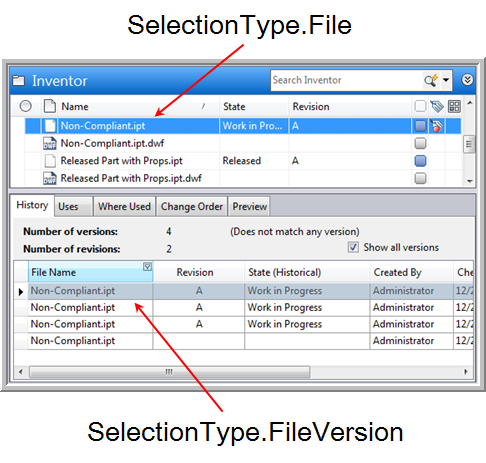
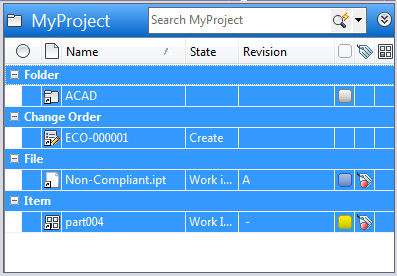

by Doug Redmond, It's All Just Ones and Zeros
6/28/2011
If you are working with custom Vault Explorer commands or tabs, then you probably deal with selection sets. Vault 2012 adds some cool new features to make your customizations even better.
There is a new SelectionTypeId value in Vault 2012. It's called FileVersion, and if it's in the selection set, it means that a specific version of a file has been selected. Don't confuse this with SelectionTypeId.File, which means a file is selected, but you don't know the version.
Files in the main grid will have SelectionTypeId.File, whereas selections in the history tab will show up as SelectionTypeId.FileVersion.

The meaning of the ID is different depending on the selection type. For example, if you want to get the File object from the server, you will call either GetFileById or GetLatestFileByMasterId depending on the selection type.
| TypeId | Id meaning |
| File | File.MasterId |
| FileVersion | File.Id |
| Folder | Folder.Id |
| Item | Item.Id |
| Bom | Item.Id |
| Change Order | ChangeOrder.Id |
| Other | "-1" Whatever is selected is not supported. |
| None | Not used |
In practice, you usually want to handle both types when dealing with files. If you have a file command, you set the type as both File and FileVersion. When you read in a selection set, you check for both File and FileVersion entries.
Links
If you have a link to an entity, it shows up in the selection set as the entity itself. In other words, your code has no idea it's a link. A link to a file shows up as a file in the selection set. Also, you can add links to folders, items and change orders. So for a given folder, it's possible to have links to many different types of objects. You can no longer assume that it will always be files like in Vault 2011.
It's possible for a single selection set to contain a mix files, folders, items and change orders. So you always want to check the type on the ISelection object before you do anything with the Id value.

In the above example, the selection set will contain 4 items, one of each entity type that can be a link target. The rows that indicate the entity type do not show up in the selection set.